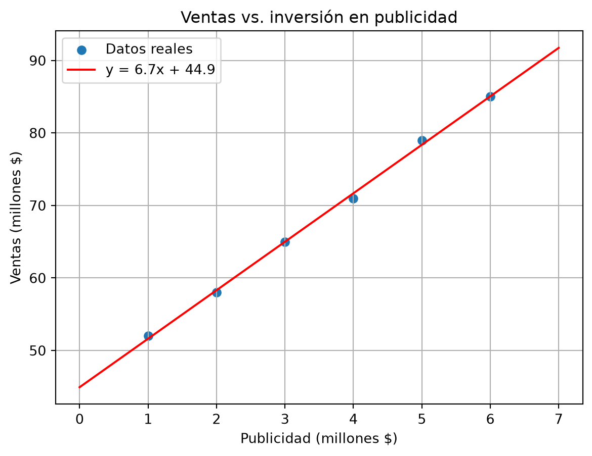
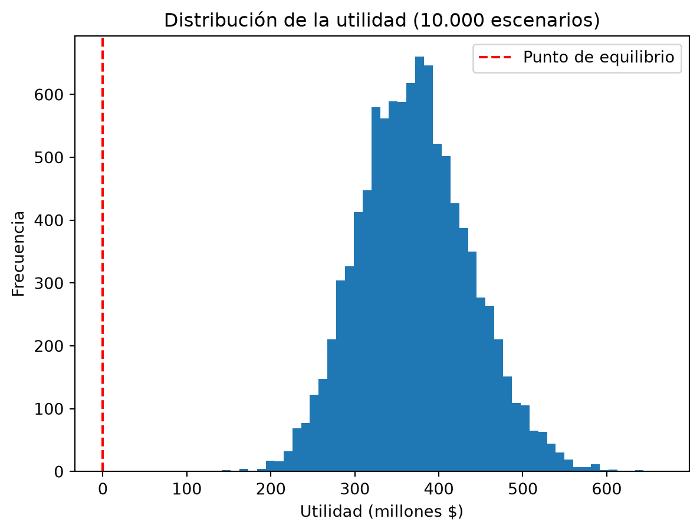

def valor_futuro(capital, tasa, años):
return capital * (1 + tasa) ** años
vf = valor_futuro(1000000, 0.12, 5)
print(f"Valor futuro: ${vf:,.0f}")Valor futuro: $1,762,342Llegó el momento de poner todo a trabajar: variables, funciones, ciclos, NumPy, pandas y gráficas. En este capítulo resolverás cuatro problemas clásicos de administración y economía: interés compuesto, valor actual neto (VAN), tasa interna de retorno (TIR) y simulación Monte Carlo para decisiones bajo incertidumbre.
El dinero tiene fecha: $1.000.000 hoy no valen lo mismo que $1.000.000 en cinco años. El valor futuro ya lo conoces:
def valor_futuro(capital, tasa, años):
return capital * (1 + tasa) ** años
vf = valor_futuro(1000000, 0.12, 5)
print(f"Valor futuro: ${vf:,.0f}")Valor futuro: $1,762,342La operación inversa es el valor presente: ¿cuánto vale hoy un pago futuro?
def valor_presente(pago_futuro, tasa, años):
return pago_futuro / (1 + tasa) ** años
vp = valor_presente(1762342, 0.12, 5)
print(f"Valor presente: ${vp:,.0f}")Valor presente: $1,000,000Un proyecto es una secuencia de flujos de caja: primero inviertes (flujo negativo) y luego recibes ingresos año a año. El VAN trae todos esos flujos a valor presente y los suma:
\[VAN = \sum_{t=0}^{n} \frac{F_t}{(1 + r)^t}\]
Regla de decisión: VAN > 0 → el proyecto crea valor; VAN < 0 → lo destruye.
def van(tasa, flujos):
return sum(f / (1 + tasa) ** t for t, f in enumerate(flujos))
# Proyecto: invertir 10 millones hoy, recibir 3 millones por 5 años
flujos = [-10000000, 3000000, 3000000, 3000000, 3000000, 3000000]
tasa_descuento = 0.12
resultado = van(tasa_descuento, flujos)
print(f"VAN al 12%: ${resultado:,.0f}")
if resultado > 0:
print("El proyecto crea valor: adelante")
else:
print("El proyecto destruye valor: no invertir")VAN al 12%: $814,329
El proyecto crea valor: adelanteLa función usa dos cosas nuevas que vale la pena mirar: enumerate(flujos) entrega cada flujo con su posición t (el año), y la construcción sum(... for ... in ...) es una expresión generadora: suma sin necesidad de crear una lista intermedia.
La TIR es la tasa que hace el VAN exactamente cero: la rentabilidad “verdadera” del proyecto. No tiene fórmula directa; se encuentra por búsqueda numérica. El método de bisección parte el intervalo a la mitad en cada paso:
def tir(flujos):
bajo, alto = 0.0, 1.0 # la TIR está entre 0% y 100%
for _ in range(100): # 100 iteraciones son de sobra
medio = (bajo + alto) / 2
if van(medio, flujos) > 0: # si el VAN es positivo, la TIR está arriba
bajo = medio
else:
alto = medio
return medio
tasa_interna = tir(flujos)
print(f"TIR del proyecto: {tasa_interna:.2%}")TIR del proyecto: 15.24%Observa el formato {tasa_interna:.2%}: convierte el decimal a porcentaje con dos cifras. Como la TIR (15,24 %) supera la tasa de descuento (12 %), el proyecto es atractivo — la misma conclusión del VAN, vista desde la rentabilidad.
La regresión encuentra la recta que mejor describe la relación entre dos variables: \(y = mx + b\). Con NumPy se calcula en una línea:
import numpy as np
import matplotlib.pyplot as plt
publicidad = np.array([1, 2, 3, 4, 5, 6]) # millones invertidos
ventas = np.array([52, 58, 65, 71, 79, 85]) # millones vendidos
m, b = np.polyfit(publicidad, ventas, 1) # pendiente y corte
print(f"Modelo: ventas = {m:.1f} × publicidad + {b:.1f}")Modelo: ventas = 6.7 × publicidad + 44.9Cada millón adicional en publicidad se asocia con m millones adicionales en ventas. Visualicemos datos y modelo:
x = np.linspace(0, 7, 100)
plt.scatter(publicidad, ventas, label="Datos reales")
plt.plot(x, m * x + b, color="red", label=f"y = {m:.1f}x + {b:.1f}")
plt.xlabel("Publicidad (millones $)")
plt.ylabel("Ventas (millones $)")
plt.title("Ventas vs. inversión en publicidad")
plt.legend()
plt.grid(True)
plt.show()
Con el modelo puedes predecir: si inviertes 8 millones, esperas m * 8 + b millones en ventas. (Ojo: predecir dentro del rango observado es razonable; extrapolar muy lejos es peligroso).
La vida real no tiene un solo futuro, tiene miles. La simulación Monte Carlo genera muchos escenarios aleatorios y mira qué pasa “en promedio” y “en el peor caso”.
Ejemplo: la utilidad de una cosecha depende del precio y del rendimiento, ambos inciertos. Supón que el precio sigue una distribución normal con media $9.500/kg y desviación $800, y el rendimiento es normal con media 4,2 ton/ha y desviación 0,6:
rng = np.random.default_rng(42)
escenarios = 10000
precios = rng.normal(9500, 800, escenarios) # $/kg
rendimientos = rng.normal(4.2, 0.6, escenarios) # ton/ha
hectareas = 10
costos = 28000000
utilidad = precios * rendimientos * 1000 * hectareas - costos
print(f"Utilidad esperada: ${utilidad.mean():,.0f}")
print(f"Peor 5% de escenarios: ${np.percentile(utilidad, 5):,.0f}")
print(f"Probabilidad de pérdida: {(utilidad < 0).mean():.1%}")Utilidad esperada: $371,754,211
Peor 5% de escenarios: $267,681,774
Probabilidad de pérdida: 0.0%Y la gráfica que resume todo el riesgo:
plt.hist(utilidad / 1e6, bins=50)
plt.axvline(0, color="red", linestyle="--", label="Punto de equilibrio")
plt.xlabel("Utilidad (millones $)")
plt.ylabel("Frecuencia")
plt.title("Distribución de la utilidad (10.000 escenarios)")
plt.legend()
plt.show()
En vez de un solo número, ahora tienes la distribución completa: la utilidad más probable, el peor escenario razonable (percentil 5) y la probabilidad exacta de perder plata. Así deciden los analistas modernos.
tir() de este capítulo.fert = np.array([50, 80, 110, 140, 170]), rend = np.array([3.1, 3.9, 4.6, 5.0, 5.2]). Predice el rendimiento para 120 kg/ha y grafica datos y recta.for sobre escenarios) y reporta la probabilidad de que el proyecto destruya valor. (d) Grafica el histograma de los VAN simulados.sum y enumerate.np.polyfit: convierte datos en un modelo predictivo \(y = mx + b\).